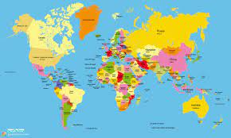

Se considera como continente a una gran extensión de tierra que se diferencia de otras menores o
sumergidas por conceptos geográficos, como son los océanos; culturales, como la etnografía; y la historia de
cada uno. Por todo esto los 5 continentes...
La división de la Tierra en continentes es convencional, y suelen reconocerse seis12 continentes; por
ejemplo, una división en seis continentes suele ser: Asia, Antártida, Europa, África, Oceanía y América,
aunque hay muchas clasificaciones que separan América en América del Norte, América Central y América del
Sur, o que unifican a Europa y a Asia como Eurasia.